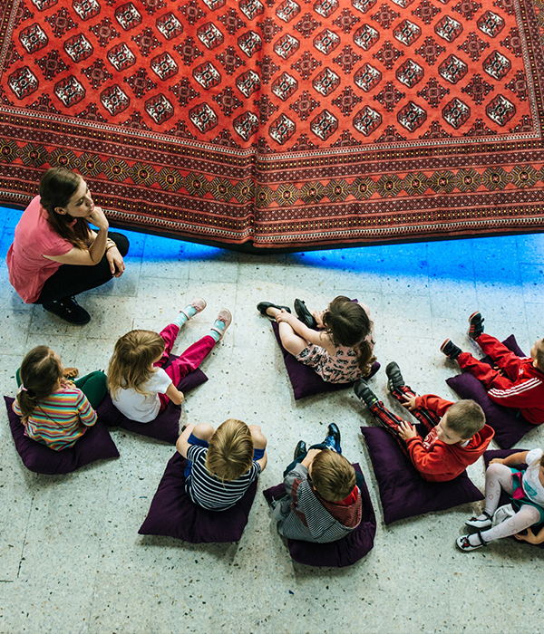
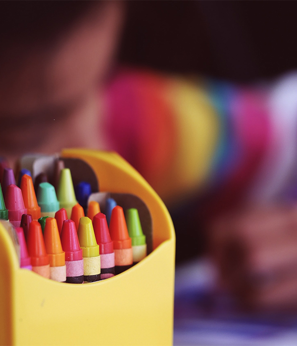
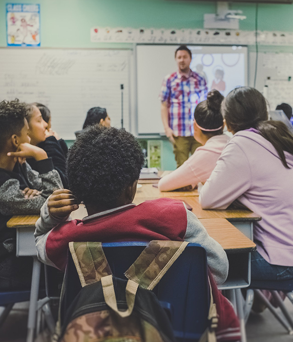
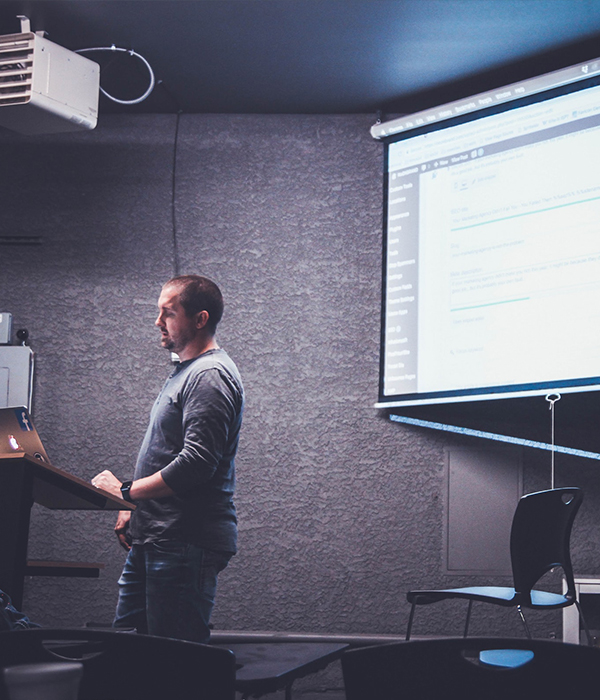

HOME>프로그램>단체교육안내
단체교육안내
서대문자연사박물관은 교육의 연계성을 강화하는 학교·학급단체 프로그램을 운영하고 있습니다.
유치부 / 초등학생 프로그램
-

- 단체 박물관교실
- 교육대상 : 20인 단체(초등학생 및 유치부 학생)
- 교육내용 : 박물관교실 강좌 중 선택
- 교육시간 : 90분
- 수 강 료 : 15,000원/인
-

- 학급 박물관투어
- 교육대상 : 초등학교 학급
- 교육내용 : 박물관관람(전시장) + 학년별 활동지 학습(교육실) + 화석지우개 만들기(교육실)
- 교육시간 : 120분
- 수 강 료 : 8,000원/인
- 학급투어는 주중(화~금)에만 신청 가능합니다.
중·고등학생 프로그램
-

- 중∙고등학생 대상 박물관교실
- 교육대상 : 20인 단체(중∙고등학생)
- 교육내용 : 7개 강좌(미생물 세상/세포 관찰/우주 개발/붕어 해부/메추리 해부/생쥐 해부/혈구의 관찰) 중 선택
- 교육시간 : 90분
- 수 강 료 : 1강좌 15,000원/인
-

- 중학교 자유학기 교육프로그램
“나도 큐레이터!” - 교육대상 : 중학교 학급단위
- 교육내용 : 자연사박물관의 역할과 전시물을 이해한 후 박물관 꾸미기 패키지를 활용하여 전시기획자가 되어보는 진로체험 프로그램
- 교육시간 : 180분
- 수 강 료 : 15,000원/인(관내:8,000원/인)
- 중학교 자유학기 교육프로그램
단체관람 (20인 이상의 단체) 예약시 유의사항
- 인터넷 사전예약 없는 단체방문은 입장이 불가합니다.
- 일반관람객과 사전 예약 단체관람객의 편의를 고려하여 대기하거나 순차적으로 입장하는 불편이 따를 수 있으니 양해 바랍니다.
- 관람 희망일로부터 1일전까지 홈페이지상에서 예약하셔야 합니다 (※ 공휴일 및 당일 예약 불가)단체관람은 유료 관람 입니다.(당일 자유 관람만 가능)
- 특히 유치원 (어린이 집)에서는 반드시 예약시간을 준수하여 주시기 바라며, 미준수시 어린이의 안전과 간식공간 혼잡 예방을 위해 입장대기 및 제한 등의 부득이한 조치가 취해 질 수 있음을 양해 바랍니다.
- 어린이들의 안전과 원활한 입장을 위해 박물관 정문 앞에서는 하차가 불가능하며 반드시 주차장에서 하차 후 인솔하여 주시길 바랍니다.(우천시, 혹서기, 혹한기시 선생님의 각별한 유의필요)
- 단체는 공룡공원 이용시간이 오전 11시20분 ~ 오후 1시까지이므로 착오 없으시길 바랍니다.(우천시, 안전사고 예방을 위해 제한됨)
- 박물관 내에서 취식은 불가함이 원칙이오며 필요시 지하 나무홀 공간을 제한적으로 제공하고 있사오나 공간이 협소한 관계로 이용이 불가 할 수 있음을 양지하여 주시기 바랍니다.
- 단체관람 차량은 박물관 주변 아파트 주민을 배려하여 하차시 반드시 주차장을 이용하시기 바랍니다.
- 개인물품은 물품보관함을 이용하여 주시기 바라며, 분실시 박물관은 어떠한 책임도 지지 않습니다.
- 단체 프로그램 사전신청을 원하시는 경우, 학급투어 02-330-8873, 단체교실 02-330-8870으로 연락하시기 바랍니다.
- 예약문의 : 02-330-8899